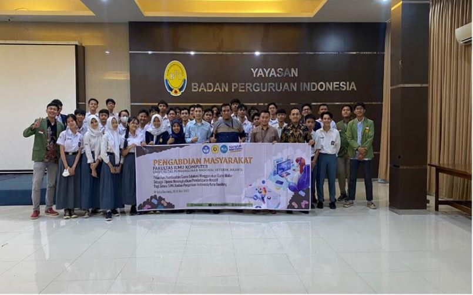

Rabu, February 27, 2024 | 794 users online
FIKPEDIA / Berita
| Berita FIK | Politik | Sekitar FIK | Event FIK |
|---|
Tampil Rinci
18:11, Minggu 23 Januari 2024 by (Nama Rekan2)

Bandung, 7 Maret 2024 – Fakultas Ilmu Komputer Universitas Pembangunan Nasional (UPN)
Veteran Jakarta dan SMK BPI Bandung tealh menjalin kolaborasi yang menarik pada
pelatihan pembuatan game edukasi menggunakan Game Maker dalam acara
Pengabdian Masyarakat Fakultas Ilmu UPN Veteran Jakarta.
Pelatihan ini bertujuan untuk meningkatkan pembelajaran kreatif siswa jurusan Rekayasa
Perangkat Lunak (RPL), yang sekarang bernama Pengembangan Perangkat Lunak dan Game
(PPLG), di SMK BPI Bandung dengan memperkenalkan mereka pada teknologi game
development yang inovatif.
Program pelatihan ini berlangsung selama dua hari dan melibatkan 32 siswa kelas X RPL dari
SMK BPI Bandung. Mereka diajarkan oleh Dosen Fakultas Ilmu Komputer dari UPN Veteran
Jakarta, yang membantu mereka memahami konsep dasar pengembangan game, pemrograman,
desain grafis, dan implementasi elemen edukatif ke dalam game.
| Berita Terhangat | ||
| SNBT Fakultas Ilmu Komputer | 17.49 | |
| Zona Integritas | 15.40 | |
| Perkuliahan Bauran | 12.56 | |
| Browse all >> | ||
| Sering dilihat | |
| 1. FIK Fair | |
| 2. Dies Natalis Fakultas Ilmu Komputer | |
| 3. Perkuliahan FIK | |
| 4. Sekitar FIK | |
| Browse all >> | |
| Jaringan Berita | ||
| Website UPNVJ | ||
| Website FIK UPNVJ | ||
| Browse all >> | ||